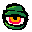

Eye Guy
Kuchipatchi
Wastefellow
the_fam.jpeg
Yo! My name's David. I'm a software engineer living in Richardson, TX with my lovely wife Robyn and our dog Kevin.
I love making things.
There's something so amazing about happening across a germ of an idea in your thoughts, nursing that idea until you sort of know how you might be able to make it, and then slowly watching it become real as you put it together. Then, in the end, getting to introduce something brand new into the world solely from that little idea, a one-of-a-kind something that never would have existed if you didn't bring it here and give it life.
Reading this out it really sounds like I'm talking about having a baby, huh? whoops
This site showcases some of my babies.
Thanks for visiting!
In 2017, I wanted to start a creative project. I thought a lot about my interests and how I might incorporate them into one thing. Electronics, programming, film, character design and plain old physical crafts converged at one juncture that I thought was particularly exciting: animatronics. I thought it would be a fun challenge to just try to build something like that from scratch. As an added bonus, I would get to film a video of it in its "natural" habitat. So, I thought up a simple figure.
Eye Guy is made from a styrofoam ball stuffed with two servos, painted and outfitted with a green cloth eyelid attached to a thin metal arm.
The fun thing about making things with mixed media like this is that if you get tired of working on one part, you can switch to another. With Eye Guy I was programming one second, and sewing the next.
I have a lifelong obsession with virtual pets. At the tail end of the rapidly dying V-Pet craze, my parents took me and my siblings to Toys-R-Us, and we happened upon a rack of Tamagotchis that were on clearance for a single dollar each. As a burgeoning tech freak growing up in the Pokemon age, the idea of a little creature in a tiny, self-contained electronic device I could put in my pocket was the coolest thing imaginable. This chance event sent me all the way down the virtual pet rabbit hole, which I have never left.

Out of this love for e-monsters, I hatched the idea to create my own v-pet for my desk at work, one that would not require any care (thus distracting me from my workly duties), that I could watch grow up and evolve during the work day.
Kuchipatchi (named for the first character sprite I was able to display on this hardware), is a virtual pet built from a Teensy microcontroller, a 0.96" OLED display, and a 3D-printed shell, with code written in C++.
My first design for this project used an Arduino Pro Micro clone, based on the Atmel ATmega32U4. That version incorporated something like 30 monsters, which was about as much as the 32U4's meager 32K of flash memory could hold alongside the code.
I designed the shell in Fusion 360, 3D printed it with a Prusa i3 MK2, and painted it by hand.
Unable to stop at 30 monsters, I researched Arduino alternatives, and discovered the Teensy 3.2. The Teensy has the same form factor, runs on Arduino's code, and comes with a whopping 256K of flash, which would be enough to add as many monsters as I wanted. As of right now, Kuchipatchi features 148 different possible monsters.
The added space also afforded me some more complexity with the code. The original version was very basic, a short snippet of procedural C++, just supporting monsters walking back and forth, evolving, and pooping (it wouldn't be a Tamagotchi if they didn't poop.) In order to add more modularity, I started from scratch on the code, opting for an OOP approach. With this template I could add in new effects, events, and behaviors easily.
Currently, Kuchipatchi supports two biomes: bubbles for underwater monsters, and snow for cold-climate monsters. It also supports visitors. Every 5 minutes, there's a small chance that a friend will come by to visit, a random monster that is classified in the same lifestage (and biome) as your primary monster.
I programmed each monster's lifespan to last about 40 hours across 5-6 stages, so each work week I would see roughly one monster grow from egg to adult. Kuchipatchi has been chugging away at my work desk ever since!
Wastefellow is my second animatronic figure, a little dude who lives in a trash can. He's one of my most treasured creations, so I have put a huge expectation on myself to make his video perfect. It's not done yet, but here are some pics in the meantime.
I was directly inspired for this project by Push, a robotic trash can that would roll around Disneyland and Walt Disney World, talking to guests. I was toying with the idea of wiring little blinking eyes into something, and this form factor is perfectly proportioned to hide all the guts, aside from the fact that building a robot into a trash can is funny.
The original design used cardboard. It worked well enough to replicate my sketch, but it looked junky (and not junky in the way that you would want when replicating a wastebasket.)
During the build, I happened to watch a video from Adam Savage's wonderful YouTube channel Tested, in which Adam builds a model spaceship out of a material called styrene. It's an amazing plastic material that's incredibly easy to work with, and perfectly suited for scratch building techy looking objects. (It's what was used to make basically every spaceship in Star Wars.) It would make a perfect construction material for my monster's home.
Voila! New can. I went a bit overboard on adding techy bits to it, but it's irresistible when working with styrene. It was during the construction of this shell that I decided to go with a sci-fi theme, maybe like a trash can on a derelict space station. An alien hermit crab.
Here's V1 of the mech for the robot itself. You might glean his axes of movement from where these servos are placed :) I don't have a pic on-hand, but I eventually redid this with styrene, and shuffled his parts to fit better in the shell. However, the basic design is the same.
Here's the shell all dolled up. I tried my best to weather it and make it look nice and dingy.
And here's the rear. I opted to bring the wires out for practical reasons, and because I thought it looked neat. If you're working in a grungy sci-fi theme then it's always better to expose wires, right?
Check back for the video later!
P.S. As you may have guessed already, this site was designed for desktop browsers!